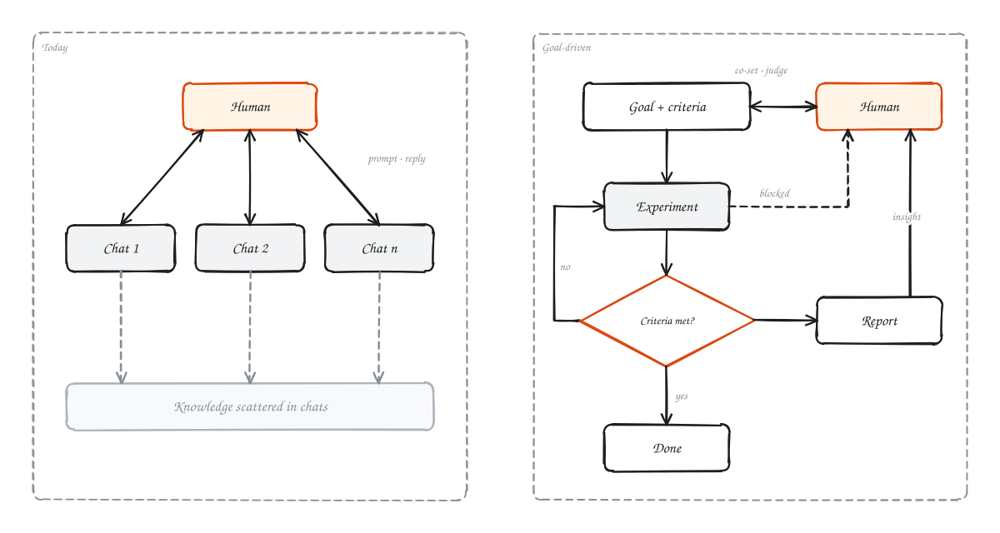
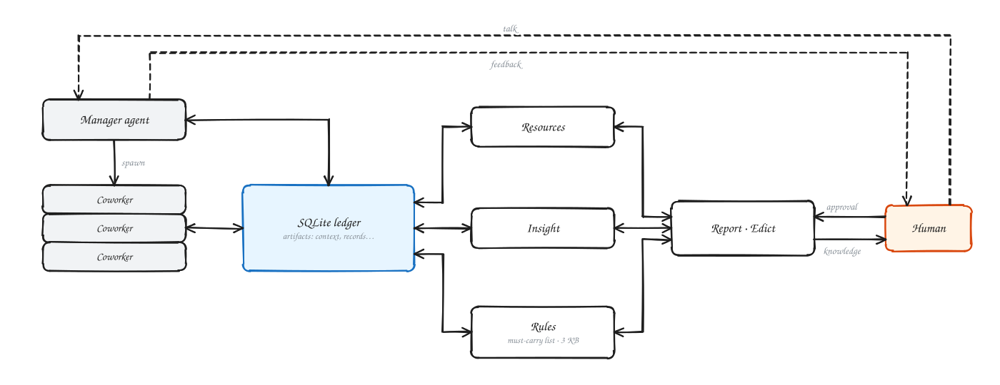
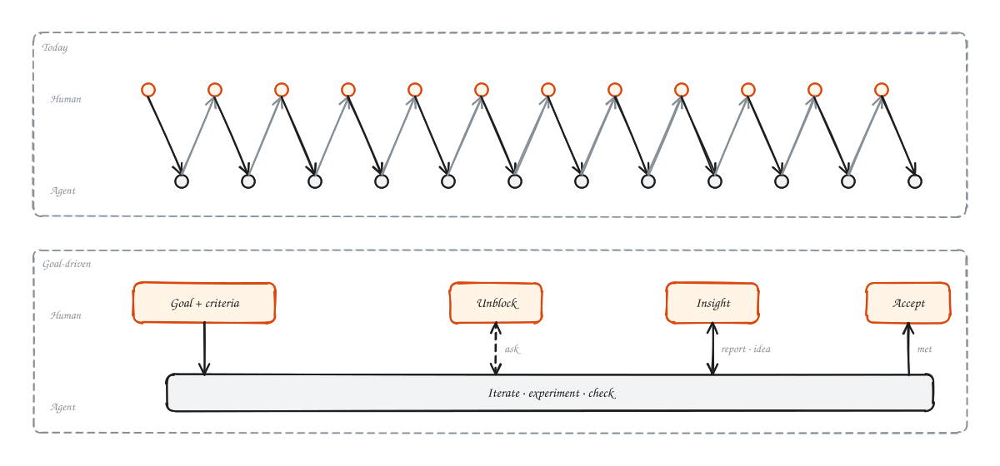
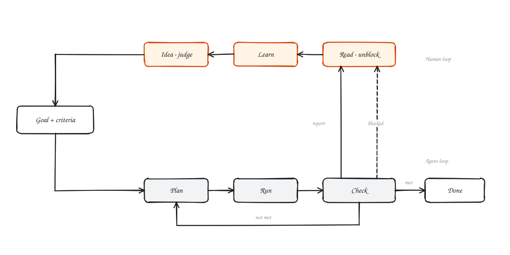
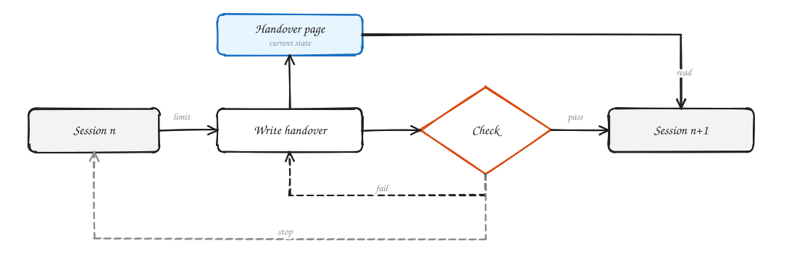
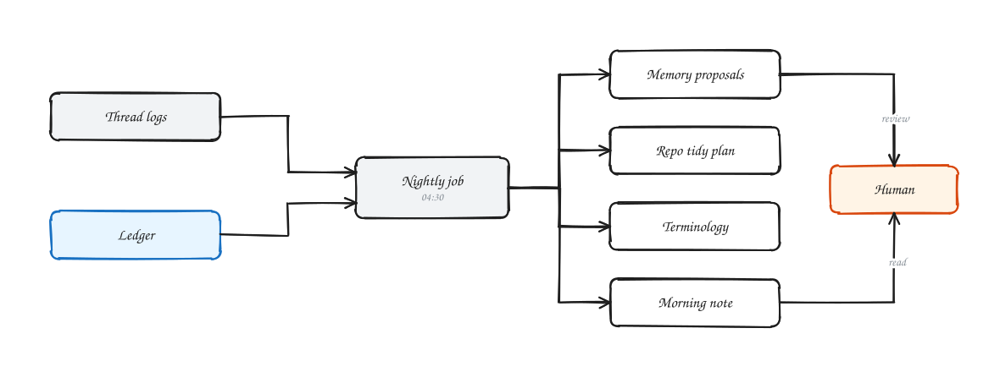

R²I: What a Harness Is For When the Agent Is Smart Enough
I have been asking myself one question lately: as models keep getting stronger, what should the agents and harnesses around them actually do?
Three generations in two years
Call the models from the first half of this year (GPT 5.5, Opus 4.6) the last generation, and models like Fable 5.2 the current one.
In 2024 and early 2025, “agentic AI” was a new idea. Models could not reliably search the web or call a tool, and benchmarks like OSWorld and GAIA were measuring exactly that.
By the first half of this year, models used skills and tools fluently. People began to offload real work to them, and AI moved from intern to coworker.
By the second half of the year, many of those skills had been distilled into the base model itself. Hand-configured skills are no longer needed, and some now get in the way.
Conversation is still the bottleneck
In research, last-generation AI helped with code and with polishing papers, and little else. To trust a result you had to read the code yourself and follow every experiment and its data.
The current generation changes that. Automated research still has real problems, but most of the execution can be offloaded. The human sets direction and decides when to pivot; code review is no longer needed.
Anthropic shows what this looks like at scale. Its monorepo went from about 2,500 merged changes a day in May 2026 to more than 30,000 a day in September, driven by how much of its software Claude now writes, and git itself became the bottleneck, so it was replaced with an in-house system, Scion (Redesigning source control at Anthropic). People there still sign off on changes, but they check the intent of a change rather than reading every line; adversarial review and automated testing carry the rest. Nobody reads 30,000 diffs a day.
Conversation, however, is still at the center. You talk to the model to change course, you read its summaries, and then you carry the conversation over by hand to whichever agent runs the experiments, or you rely on a third-party framework such as SuperARIS to wire them together (and many third-party integration tools are still not as good as the vendors’ own Claude Code and Codex).

Will the next generation still need to be pushed forward one chat turn at a time? If a person can hand over 90% of the work toward any goal, what is the remaining 10%?
What the human keeps
My answer: three things.
- Resources: money, compute, accounts, data.
- Rules: permissions and the lines the agent may not cross.
- Insight: knowing what the work has found.
The first two are familiar. The third matters most. Even if the work is fully offloaded, a person who no longer follows what the agent is learning will slowly lose the ability to judge whether its conclusions are right. Something outside the model has to keep the person’s insight in step with the agent’s. None of the three can be trained into a base model, because they belong to the person and the project.
That is the idea behind R²I: a next-gen harness built on Resources, Rules and Insight.

Why the square
The name has a second reading. In statistics, R² (the coefficient of determination) is the share of the variation that a model explains. Read the person as the model and the project as the data: their R² is how much of what happened in the project they can explain. The more the agents do, the faster that number falls unless something holds it up. The goal of the harness is to keep the person’s R² close to 1, so that insight never drops out.
Five shifts
R²I rests on five shifts in how the harness is built.
1. From conversations to a workspace
Today’s loop is: a person gives a task, an agent does it, the person replies. One project contains countless small tasks, and each one becomes another long conversation.

The loop I want is different. The person and the agent agree on a goal and on how success will be judged. The agent iterates against that standard on its own, and comes back only when it needs a resource or a permission. In parallel, the agent writes up what each experiment found. The person reads those reports, learns from them, judges the results and proposes new ideas. By the end, the person has the same insight into the project as the agent.

2. From sessions to artifacts
Once the base model is strong enough, the chatter between agents is pure noise and information loss. Run five or six projects at once through CLIs, chat windows and context-window compression, and large parts of the context simply go missing. Every session has its own context window, compaction, handoff and memory. As the projects run, all of this keeps forking and duplicating. Left unmanaged, Claude Code and Codex can fill a computer’s disk within days and leave folders holding hundreds of millions of randomly named files. With context windows in the millions of tokens, every call re-reads the cache and an extremely long memory context, and compaction inevitably brings serious information loss and makes the agent dumber.
Anthropic’s recent post on agent memory draws the same line (The components of agent memory). It treats compaction as a separate mechanism, not memory. Memory is what an agent deliberately writes down for future sessions: notes, linked wiki pages, and a small set of facts injected into every session. Even that injected layer has to stay small, since it costs tokens on every call and spreads any error it contains.
So the real problem is how to let an agent, reading only the context its task needs, recover enough “sanity”: a sound understanding of the current project and task.
The session is not the source of truth for knowledge; artifacts and persistent state are. Experimental results, rules, acceptance criteria and decisions already made each have exactly one authoritative record. However many times the executing agent is replaced, every new one resumes from the same state system, not from the previous agent’s conversational memory.

3. From a super-agent to coordination through artifacts
No amount of compute or context makes it practical for one agent to read everything, understand every detail and relay it all. Agents should coordinate by reading and writing shared artifacts, not by summarizing for each other.
4. Memory has to be maintained, not hoarded
A long-running research system that runs ten thousand experiments produces ten thousand handoffs and many more notes. At some point maintaining that memory costs more than doing the work. The same Anthropic post makes this point: memory needs upkeep, and an unpruned memory can cost an agent more than it saves.
Memory, rules, results and the workspace itself need regular clean-up, and that clean-up is a job for agents too. In R²I it runs every night.

5. Constrain, don’t coach
Weaker models needed a lot of help from the harness: skills, prompts, personas, step-by-step procedures. Stronger models need less of it, and much of it becomes noise that holds them back.
A next-generation harness should provide tools, rules, resources and persistent state, not ever-longer instructions.
What comes next
R²I today is built for the current generation. Four changes I expect as base models improve:
Dreaming that brainstorms, not just tidies. Tonight’s “dream” pass only proposes memory edits. A stronger nightly agent should do two more things. First, garbage collection: archive and fold away experiment branches that failed and taught nothing. Second, cross-pollination: compare what mainline A and mainline B found, write new hypotheses into the ledger, and put a ready decision on the morning edict, such as “Based on last night’s 50 runs, drop plan 2 and test hypothesis X instead.”
An incubation mode. Quiet execution works once the goal is clear, but getting to a clear goal is still a conversation. In incubation mode the human and the manager agent talk in dense, many-turn exchanges, similar to ARIS. Once they agree, one command converges the conversation into ledger records (goals, acceptance criteria, structure), and the project switches to quiet, edict-driven execution.
More base models, beyond one CLI. R²I currently runs on Claude Code. Its rules already compile to CLAUDE.md, AGENTS.md and GEMINI.md. The next step is threads and workers on other base models and agent runtimes, all reading and writing the same ledger.
Fewer edicts over time. As models get better, the list of things only a human must decide should shrink: fewer approval pages, shorter reports. The ledger still keeps everything for anyone who wants to audit it.
Sources
The two Anthropic posts this essay leans on. Short excerpts only; read the originals in full.
The components of agent memory, Lance Martin, Anthropic, Nov 6, 2026.
[…] knowledge that Claude gains from experience […] saved as context it can read later.
Memory can also drift and become irrelevant as the environment changes.
Redesigning source control at Anthropic, Anthropic Engineering, Oct 13, 2026.
as of September, we merged over 30,000 per day.
[…] examine the intent of the change as opposed to reading every line of code.
R²I：当 Agent 足够聪明时，Harness 还该做什么
我最近一直在思考，面对 Next-Gen AI，我们究竟该怎么设计对应的 Agent 和 Harness。
AI 演进的脉络
我把今年上半年的诸如 GPT 5.5、Opus 4.6 等等称为上一代的 AI，Fable 5.2 等等称作这一代，稍微回顾一下 AI 演进的脉络：在 2024 到 2025 年初，Agentic AI 还是个很新的概念，那时候的模型连基本的网页搜索、调用 tools 还做不到，那个时候还有诸如 OSWorld、GAIA 等 benchmark。
到了今年上半年，AI 已经能够熟练用各种 Skills 和 Tools，人类也开始把一大部分工作 offload 给 AI，AI 已经从“intern”转成了“coworker”；而到了今年下半年，很多 Skills 已经被直接 distill 进 base model 里了，根本不需要人再去手动配置各种 Skills，甚至 skills 已经开始拖累现在的 base model。
对话依旧是瓶颈
这就引来了一个现实问题，人该如何与 next-gen AI 一起 cowork？拿 research 来说，在 past-gen AI 的时候，绝大部分工作还得人自己干，AI 基本只能辅助一下写代码和润色 paper，人基本要亲自盯着代码、或者完整跟进每一个实验的过程和数据，才能拿到一个靠谱的结果。到了今年这一代，虽然 Auto Research 有很多问题，但大量具体执行的工作已经可以 offload，人只需要把控大方向、做 pivot 就够了，不用再 code review。
Anthropic 自己的 monorepo 就是一个例子：每天合并的代码变更从 2026 年 5 月的约 2,500 个涨到 9 月的 30,000 多个，git 本身成了瓶颈，于是换成了自研的 Scion；他们的工程师看的是变更的意图，不再逐行读代码（见文末原文）。
但是，在今年这一代，“对话”依旧不可或缺，人还是需要和 AI 持续对话来 pivot 或者查看 AI 的总结，再手动把聊天转交给跑实验的 Agent，或者靠 SuperARIS 这类第三方框架去做集成（且不论现在很多第三方集成工具的质量还不如直接用基模厂商的 Claude Code、Codex）。
那么，到了再下一代 AI，它还需要人类通过高频的多轮对话去一步步推着走吗？面对任何目标，人类是不是可以把 90% 以上的工作都彻底交给 AI？那么人到底应该在下一代 workflow/harness 里扮演什么角色？
当 Agent 足够聪明时，Harness 还需要负责什么？
我的答案是人只需要掌管三件事：
- Resources
- Rules / permission
- Insight
为什么？前两项不用过多说明，第三项我认为是最重要的。随着 AI 的能力越来越强，即便工作可以 offload 给 agent，但假如人类和 AI 的知识不能同步，不能和 AI 在推进的同时一起成长，人类在长久失去上下文认知的节奏下会慢慢失去 judge AI 判断的能力。因此必然需要有外部的 harness 来负责帮助人类理解 AI 到底在做什么。这三点无法被内化进任何 base model。
基于以上三点，我提出 R²I：Next-Gen Harness based on Resources, Rules, Insight。
为什么是平方
这个名字还有第二层意思。统计里的 R²（决定系数）衡量一个模型能解释数据中多少比例的变化。把人看作模型、把项目看作数据，人的 R² 就是他能解释项目里发生的事情的程度。agent 干的活越多，这个数掉得越快，除非有东西把它托住。Harness 的目标，就是让人对项目的 R² 保持接近 1：Insight 不掉线。
五个转变
1. 从 Conversation-Centric 转向 Workspace-Centric
现在的 research flow 是：人类提出任务 → Agent 执行 → 人类继续对话，在一个大任务下有无数小任务，每一个都需要持久对话。
未来的结构应该是：人类和 AI 共同设定一个目标和验收标准 → agent 按照验收标准持续自我迭代和实验 → 遇到资源问题、权限问题找人类解决 → 继续直到标准达标。与此同时，人类持续接收 AI 根据实验写的报告和 insight → 学习到新的知识和 insight → 提出新的想法、judge 实验结果 → 同样获得了项目的一切知识。
2. 从 Session/Agent-Centric 转向 Artifact-Centric，从 compaction 转向 handoff + uniform artifact
当 base model 足够强，agent 之间的废话全是 noise 和信息丢失。在同时推进 5 到 6 个项目时，依赖 CLI 或聊天窗口和 context window 的 compression 会导致严重的上下文遗漏。每个 Session 都有自己的 Context Window、Compaction、Handoff 和 Memory。随着项目运行，这些信息会不断分叉和重复，如果不加管制，Claude Code 和 Codex 能在几天内把电脑磁盘占满，文件夹充满上亿随机命名的文件；context window 上百万时，每次调用都会重新读取一遍缓存和极长的记忆上下文，compaction 又不可避免地带来严重的信息损失和降智。
Anthropic 最近讲 agent memory 的文章也划了同样的界线：compaction 不算 memory；memory 是 agent 为以后的 session 有意写下的东西，而且需要维护，不然会随环境变化而过时（见文末原文）。
因此，真正需要解决的是如何让 Agent 在只读取任务必要上下文的前提下，恢复足够完整的“sanity”，即对当前项目/任务的理解。
Session 不是知识的正本，Artifact 和持久化状态才是。实验结果、规则、验收标准、已作出的决定只保存一份权威记录。无论替换多少次执行 Agent，它们都从同一个状态系统恢复工作，而不是依靠前一个 Agent 的对话记忆。
3. 从 “Super-agent” 转向 “Agent-to-Artifact Coordination”
即便拥有再多算力和上下文窗口，也很难存在一个阅读所有工作、理解所有细节、转述所有内容的 super-agent。
4. Memory 需要主动维护，而不是无限积累
如果一个长期运行的研究系统做了一万个实验，生成一万个 Handoff，以及更多中间文档，最后维护这些 Memory 的成本可能超过执行成本。
Memory、rules、results 和 workspace 需要定期由 agent 进行整理。
5. 下一代 Harness 应该更多地控制 AI，而不是指导 AI
对能力较弱的模型，Harness 要提供大量 skills、prompt、character description 和执行步骤等等。但随着模型能力的增强，大多数都会变成冗余的 context，甚至干扰模型发挥能力。
Tools + Rules + Resources + Persistent State，而不是 skills + prompt。
下一步设想
第一，做梦从整理升级为自我 brainstorm。 到了下一代基模，“做梦 Agent”在夜间不仅应该做垃圾回收（Garbage Collection，比如自动将 experiments 表里失败且无价值的分支归档折叠），还应该做跨主线的知识交叉（Cross-Pollination）：对比 A 主线和 B 主线的实验结果，主动在 hypotheses 表里生成新的假设，并在早上 7 点的奏折里直接给出一个“基于昨晚 50 组实验，建议废弃原方案二、改测新假设 X”的拍板选项。
第二，孵化模式。 在这个模式下，人类与主 Agent 进行高密度的多轮对话（类似 ARIS），一旦达成共识，一键调用脚本将对话收敛转化为台账中的 goals、criteria 和 structures 表记录，随后无缝切入“批奏折”的静默执行模式。
第三，支持更多 base model，脱离 Claude CLI。 规则已经能生成 CLAUDE.md、AGENTS.md 和 GEMINI.md，下一步让线程和 worker 跑在别的基础模型上，共用同一份台账。
第四，奏折越来越少。 随着 AI 能力越来越强，需要人看的报告和 Edict 会逐渐减少。
原文
文中引用的两篇 Anthropic 文章。这里只摘短句，全文请看原文。
The components of agent memory，Lance Martin，Anthropic，2026-11-06。
[…] knowledge that Claude gains from experience […] saved as context it can read later.
Memory can also drift and become irrelevant as the environment changes.
Redesigning source control at Anthropic，Anthropic Engineering，2026-10-13。
as of September, we merged over 30,000 per day.
[…] examine the intent of the change as opposed to reading every line of code.